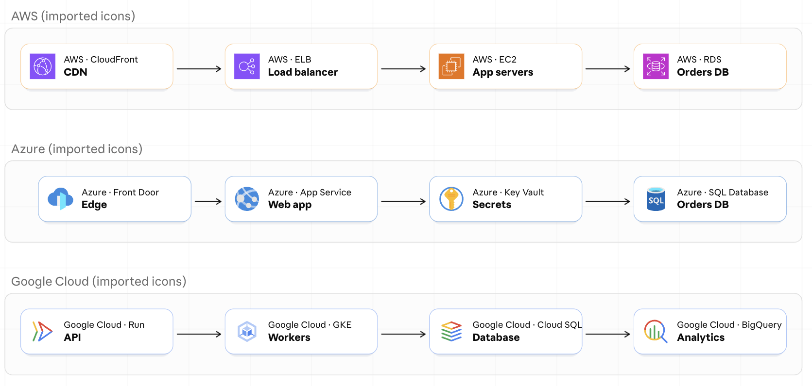
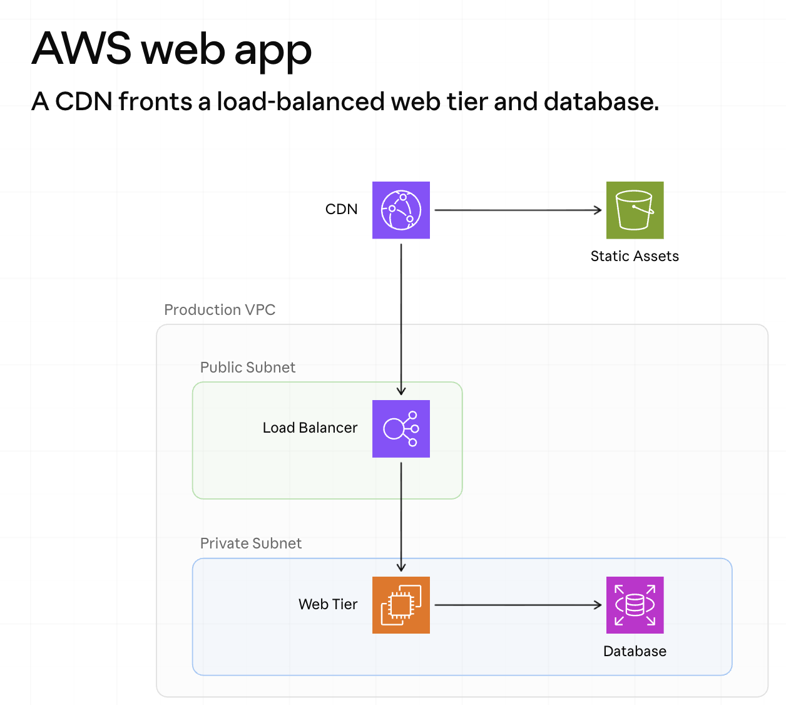
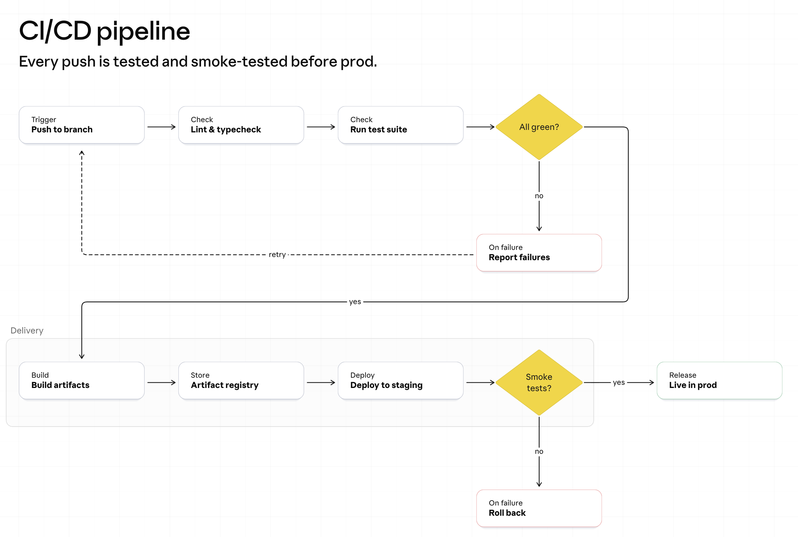
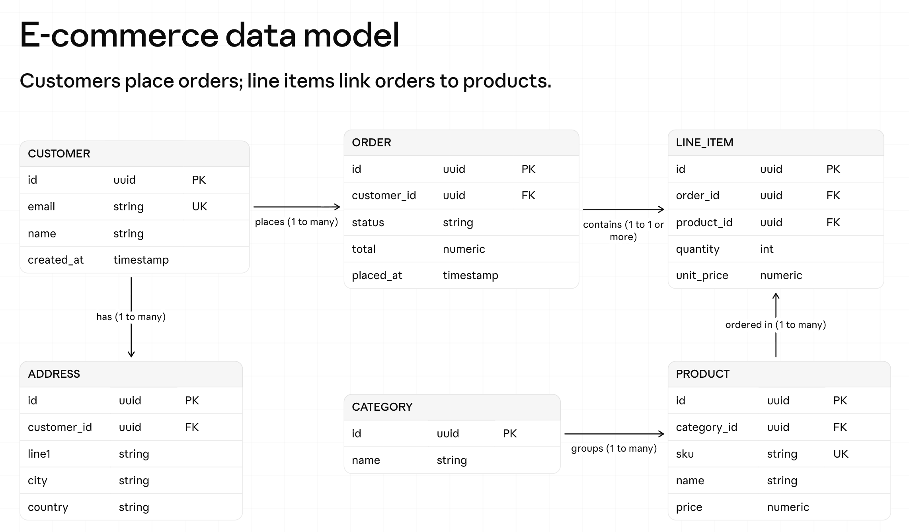
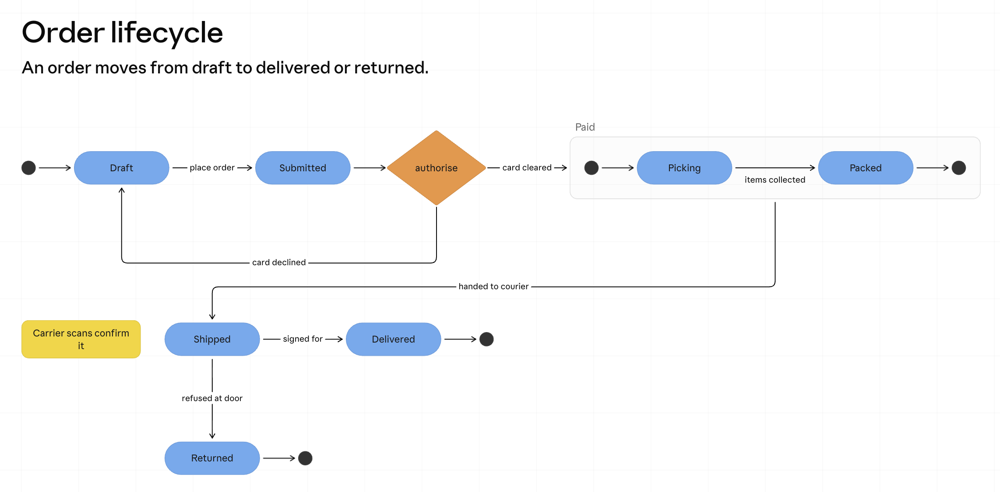
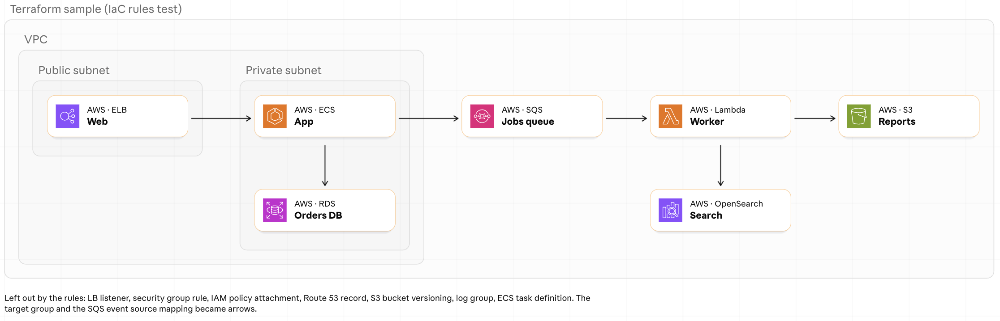

Describe a system to Claude. Get a diagram on a whiteboard your team can share, comment on and edit.

Contents
01Start here
Deezle Tech Diagrams is a plugin for Claude. You describe a system, and Claude draws it on a Claude Whiteboard: a shared board where everything stays a box, line or note that people can move.
Behind the scenes, Claude plans the diagram in Mermaid, a short text format for diagrams. The plugin teaches Claude how each Mermaid part becomes a board element, how to lay the parts out neatly, and where to find icons. You never have to learn Mermaid.
| Item | Details |
|---|---|
| Claude plan | A paid plan with Whiteboards turned on. Whiteboards is in beta. It's on by default for Team plans and off by default for Enterprise plans, where an admin turns it on under Organization settings > Artifacts. |
| Claude app | Claude Code 2.1.275 or later, or Cowork. |
| Anything else? | No. The plugin is instructions plus icons. It runs no server and installs no code. |
02Setup
Install takes one command.
Type this into Claude Code:
/plugin install deezle-tech-diagrams --marketplace DeezleSince74/deezle-tech-diagramsAsk Claude: "Draw a web app with a database on a whiteboard." Claude creates a new board and draws on it. If it can't, see chapter 09.
03Quick start
Ask for a whiteboard and say what goes on it. Name the parts and how they connect.

04Diagram types
Claude picks the right kind from what you ask for. You can also name it: "as a flowchart," "as an ER diagram."
Shows steps and decisions. Diamonds ask a question, and each answer gets its own labeled arrow. The main path runs along the top row. Dashed arrows mark a retry or an optional step.

Shows tables, their columns and how they relate. Each table lists its columns with a type and a key: PK (primary key, the row's unique ID), FK (foreign key, a link to another table) or UK (unique key). Each arrow says how many rows link, such as "1 to many."

Shows the states something can be in, and what moves it from one to the next. The dark dot is the start, and each end gets its own dot. A group of states can sit inside a box, and notes sit off to the side.

05Looks
Architecture boards use an icon for each service. Two options change how they look.
Ask for cards ("draw it with cards") to get each service as a white card with its icon, its provider and service, and its name. Each card and its two lines of text are grouped, so they drag as one piece.
The official cloud icons belong to Amazon, Microsoft and Google, so the plugin doesn't ship them. Each person gets their own copy, under the vendor's terms. Ask "use the official AWS icons" (or Azure, or Google Cloud), and Claude:
~/.deezle-tech-diagrams/icons.Until you import a vendor's set, its services use open icons or plain shapes. Ask "which icons do I have?" to check, or "remove the imported icons" to undo it.
06Infrastructure as code
Infrastructure as code (IaC) means describing cloud resources in files. Hand Claude a Terraform .tf file, a Pulumi program, a Bicep file or a CloudFormation template, and it draws what the file builds.
| In the file | On the board |
|---|---|
| Networks and groups | Sections for networks, subnets and resource groups. A section with nothing in it is skipped. |
| Services | Icons or cards for the things a person would point to: databases, functions, clusters, queues, buckets and load balancers. |
| References | Arrows that follow the way data or calls flow, so a queue points to the function that reads it. |
| Links | A resource that only links two others, such as a Lambda event source mapping, becomes one arrow instead of a box. |
| Settings | Left out: policies, security group rules, DNS (Domain Name System) records, bucket settings, and logging and monitoring setup. Ask for them if you want them drawn. |

Claude matches each resource to an icon by working out the product's name, even for resource types it has no example for. For instance, aws_opensearch_domain becomes Amazon OpenSearch Service.
07Hands on
Everything Claude draws stays a normal board element. Move it, change it, or ask Claude to.
| To do this | Do this |
|---|---|
| Move a box | Drag it. Arrows stay attached, and a card drags with its text. |
| Add your own notes | Use the toolbar at the bottom of the board for text, sticky notes, shapes and drawing. |
| Change the diagram | Ask Claude: "Add a cache between the API and the database." Claude reads the board fresh and changes only what you asked for. |
| Share it | Click Share at the top right. A new board is private until you share it. |
| Talk about it | Teammates can comment on the board, or click Chat to ask Claude about it. |
08Trust
The plugin is instructions and icons. It has no server and ships no code.
~/.deezle-tech-diagrams/icons on your computer. Ask Claude to remove them any time.09Fixes
| Problem | Fix |
|---|---|
| Claude can't make a board | Whiteboards is off for your account. On Enterprise plans, an admin turns it on under Organization settings > Artifacts. Until then, Claude gives you the Mermaid text instead. |
| The install fails | Check that you have Claude Code 2.1.275 or later, and access to the plugin's repository. |
| A plain icon or box | That vendor's icons aren't imported yet. Ask Claude to use the official icons, or name the service more exactly. |
| A crowded board | Ask Claude to split it across two boards, or to group related services. |
| Missing pieces | On a board drawn from IaC files, settings such as policies and log groups are left out on purpose. Ask Claude to draw them. |
10The fine print
The built-in icons are open source: plain cloud shapes, Simple Icons brand marks, Lucide category icons (compute, database, storage, network and more) and data-platform logos. Credits are in ATTRIBUTION.md. Imported vendor icons are your own copies, under each vendor's terms. The official icons in this manual's pictures were imported that way. All product names and icons are trademarks of their owners.
The plugin is free to use under the MIT License. The full text ships with the plugin in LICENSE.md.
Visit madewithdeezle.com.